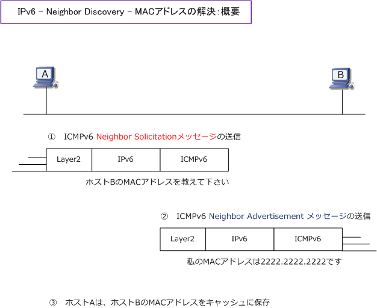
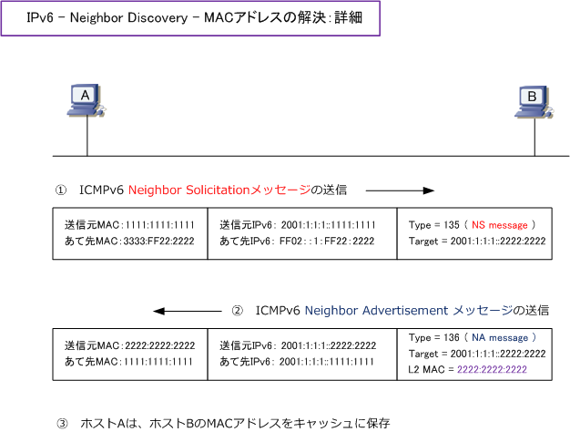

IPv6 - Neighbor Discovery
IPv6 - Neighbor Discoveryとは
IPv4ではデータリンク層のアドレス（MACアドレス）を解決するために、ARPブロードキャストにより アドレスを解決します。IPv6ではNeighbor Discovery（ND）機能を使用しアドレスを解決しています。 このNeighbor Discovery（近隣探索）は、具体的には、ICMPv6のNeighbor Solicitationメッセージと 要請ノードマルチキャストによりアドレスを解決する機能のことです。IPv4とIPv6の違いは以下の通り。
| version | 説明 |
|---|---|
| IPv4 | ARPのブロードキャストにより、通信先のMACアドレスを知る |
| IPv6 | ICMPv6のNeighbor Solicitationメッセージと要請ノードマルチキャストで通信先のMACアドレスを知る |
IPv6 - データリンク層のアドレス解決の流れ
IPv6では、ノードのI/FにIPv6アドレスを設定した場合、そのIPv6アドレスのインターフェースIDに対応する 要請ノードマルチキャストアドレスのグループに自動的に参加します。IPv6アドレスを持つノードが、通信先 のノードのMACアドレスを知るために、通信先の要請ノードマルチキャストアドレスを指定して、ICMPv6の Neighbor Solicitationメッセージを送信しMACアドレスを知ろうとします。本メッセージを受信したノードは Neighbor Advertisementメッセージを送信して応答し、これでノード間でIPv6通信ができるようになります。

上図で、NSメッセージがARPリクエスト、NAメッセージがARPリプライに相当することが分かります。 上図のNSメッセージ、NAメッセージのパケットの中身（Layer2、IPv6、ICMPv6）は以下の通りです。

| アドレス | ノードA | ノードB |
|---|---|---|
| グローバルユニキャストアドレス | 2001：1：1：1：：1111：1111 | 2001：1：1：1：：2222：2222 |
| 要請ノードマルチキャストアドレス | FF02：：1：FF11：1111 | FF02：：1：FF22：2222 |
| IPv6マルチキャストのMACアドレス | 3333：FF11：1111 | 3333：FF22：2222 |
| MACアドレス | 1111：1111：1111 | 2222：2222：2222 |
Cisco IOS - データリンク層アドレスの解決情報の表示
| version | IOSコマンド | 説明 |
|---|---|---|
| IPv4 | show ip arp | ARPキャッシュの確認 |
| IPv6 | show ipv6 neighbors | Neighbor Discoveryキャッシュの確認 |